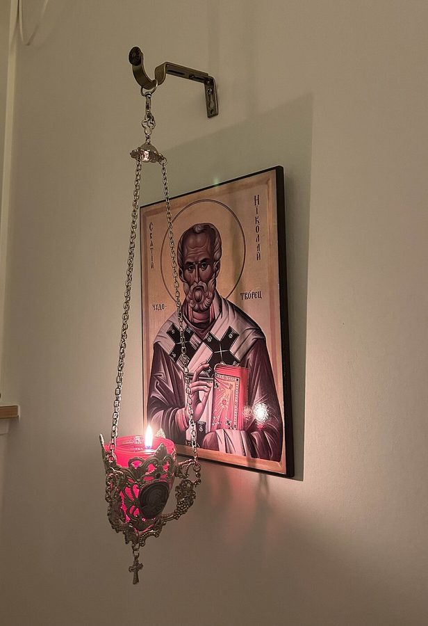

Christ Pantocrator
Deesis mosaic of Christ in Hagia Sophia, Constantinople (13th century).
Share as name-only card (no verified short quote on file for this icon).
Public-domain icons of saints and feasts featured on Ancient Talk. Open one to read a short note, go to their writings, or send a shareable card—with a verified quote, or with the saint’s name alone.
Every image is copied from Wikimedia Commons under a public-domain or CC0 / attribution-free licence; full credits are at the bottom of this page. Quotes on share cards come only from public-domain texts already hosted on this site.
Map of the saints Ask the Fathers
Deesis mosaic of Christ in Hagia Sophia, Constantinople (13th century).
Share as name-only card (no verified short quote on file for this icon).
The famous 12th-century Byzantine icon of the Mother of God, long venerated in Russia.
Share as name-only card (no verified short quote on file for this icon).
Father of monasticism in the Egyptian desert (c. 251–356).
Share as name-only card (no verified short quote on file for this icon).
Bishop of Alexandria and tireless defender of the Nicene Creed (c. 296–373).
Shareable quote available from St Athanasius.
Bishop of Caesarea; monastic founder and theologian of the Holy Spirit (c. 330–379).
Shareable quote available from St Basil the Great.
Archbishop of Constantinople, called “Golden-Mouthed” (c. 347–407).
Shareable quote available from St John Chrysostom.
Gregory of Nazianzus; Cappadocian Father (c. 329–390).
Share as name-only card (no verified short quote on file for this icon).
Cappadocian Father and mystical theologian (c. 335–c. 395).
Share as name-only card (no verified short quote on file for this icon).
Bishop of Hippo; Confessions and City of God (354–430). Western Father.
Shareable quote available from St Augustine of Hippo.
Bishop of Antioch, martyred in Rome (d. c. 108).
Shareable quote available from St Ignatius of Antioch.
Bishop of Lyons; disciple of Polycarp (c. 130–202).
Share as name-only card (no verified short quote on file for this icon).
Bishop of Jerusalem; Catechetical Lectures (c. 313–386).
Shareable quote available from St Cyril of Jerusalem.
Deacon and poet of the Syriac Church, “Harp of the Spirit” (c. 306–373).
Shareable quote available from St Ephrem the Syrian.
Monk near Jerusalem; defender of icons (c. 675–c. 749).
Shareable quote available from St John of Damascus.
Isaac of Nineveh; teacher of prayer and mercy (7th century).
Shareable quote available from St Isaac the Syrian.
Bishop of Rome; First Epistle to the Corinthians (c. AD 96).
Shareable quote available from St Clement of Rome.
Philosopher and apologist, martyred in Rome (c. 100–c. 165).
Share as name-only card (no verified short quote on file for this icon).

Bishop of Myra in Lycia, wonderworker (d. c. 343).
Share as name-only card (no verified short quote on file for this icon).
Photographs of two-dimensional public-domain artworks are treated as public domain under Commons’ PD-Art practice where marked; CC0 files are dedicated to the public domain by their uploaders.